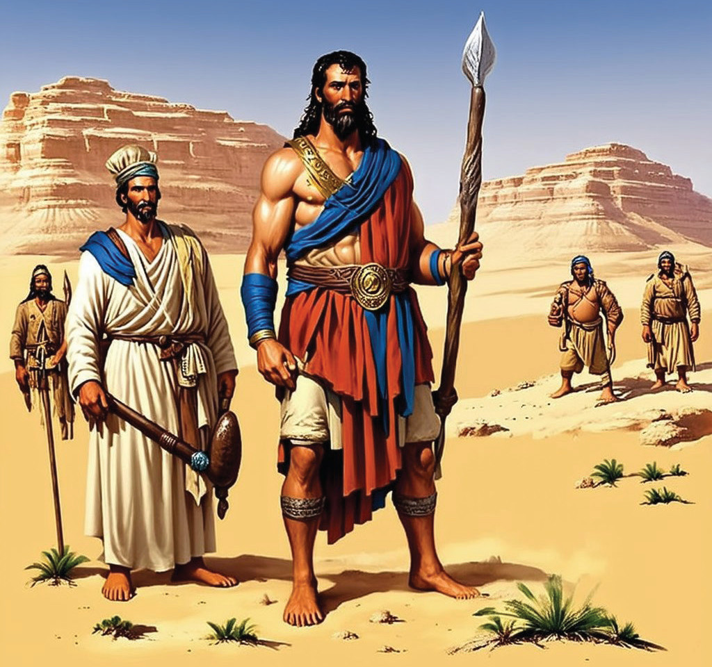
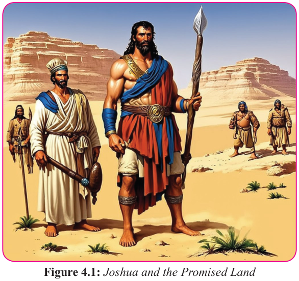

Form Two
Tanzania Institute of Education (TIE)


Bible Knowledge
55
important event in the history of Israel, marking the fulfillment of God’s promise to
Abraham, Isaac, and Jacob with regards to the land (Genesis 12:7, Exodus 3:8). To make the conquest mission more practical, the Lord commanded Joshua to be strong and courageous and ensure that he delivers the land that God promised to their fathers (Joshua 1:16). Thus, Joshua led many campaigns, defeating many nations
(Joshua 10:12-14) and successfully divided the Land of Canaan (Joshua 14: 4-15).


Figure 4.1: Joshua and the Promised Land
Actually, the conquest and settlement of the Israelites in the Promised Land testifies God’s faithfulness to His promises and the importance of obedience to His commands. The events leading to the conquest of the land of Canaan highlight the tension between divine sovereignty and human responsibility, as well as, the need for faithfulness and obedience to covenantal agreement
The fall of Jericho
Jericho was a Canaanite city in the Jordan Valley until its conquest by the Israelites under Joshua around 1400 BCE. Geographically, Jericho is situated in the Jordan
Valley near the Dead Sea, and is known as the “City of Palms.” This is the first city the Israelites attacked upon entering Canaan after crossing the Jordan River. The book of Joshua recounts the Israelites’ conquest of Jericho, where the walls of the city apparently fell after the Israelites marched around them for seven days, with priests blowing horns on the last day. Jericho is mentioned in the other biblical texts,